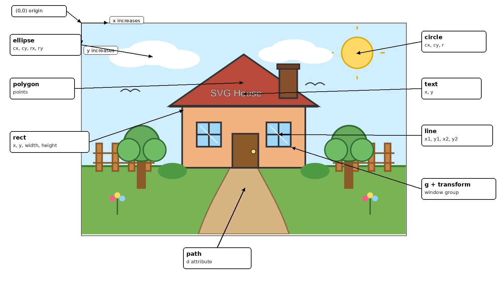
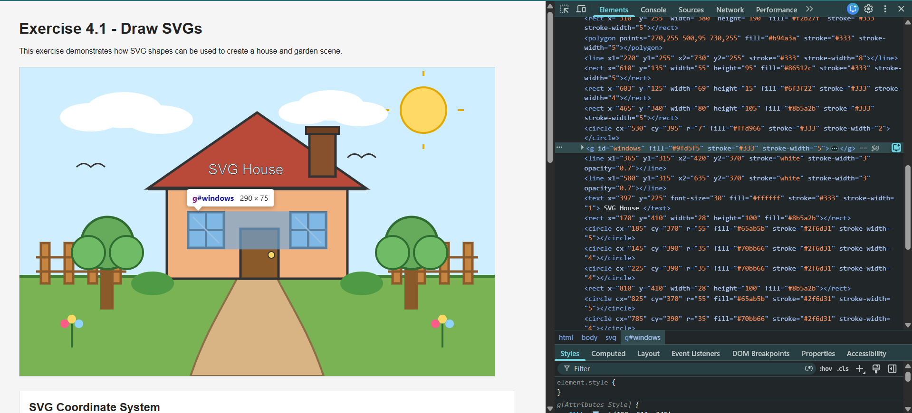

This exercise demonstrates how SVG shapes can be used to create a house and garden scene.
SVG uses a coordinate system where the origin (0,0) starts at the top-left corner. The x value increases when moving to the right, and the y value increases when moving downward. This is different from a normal maths graph, where y usually increases upward.
| SVG shape | Example from my code | How the coordinates work |
|---|---|---|
| Rectangle | <rect x="310" y="255" width="380" height="190"> |
The x and y values place the top-left corner of the house body. Width and height control the size. |
| Circle | <circle cx="850" cy="90" r="48"> |
cx and cy place the centre of the sun. r controls the radius. |
| Ellipse | <ellipse cx="220" cy="90" rx="80" ry="38"> |
cx and cy place the centre. rx controls horizontal radius and ry controls vertical radius. |
| Polygon | <polygon points="270,255 500,95 730,255"> |
Each pair of numbers is a point. The three points join together to form the roof. |
| Line | <line x1="392.5" y1="305" x2="392.5" y2="380"> |
x1 and y1 are the starting point. x2 and y2 are the ending point. |
| Path | <path d="M460 440 C430 500..."> |
The d attribute contains drawing commands that create curved or custom shapes. |
| Text | <text x="397" y="225">SVG House</text> |
The x and y values position the text inside the SVG canvas. |
| Group | <g id="windows"> |
The two windows are grouped so shared styles like fill, stroke, and stroke width can be applied together. |
| Transform | <g transform="translate(355, 305)"> |
The translate value moves the whole window group to a new position without changing every shape manually. |
This section is for the screenshot of my SVG drawing with annotations showing how the coordinates in the code match the positions of the shapes in the drawing.

This screenshot shows the SVG elements inspected in the browser Developer Tools. It demonstrates how the SVG drawing is represented in the DOM, including the grouped window elements.
